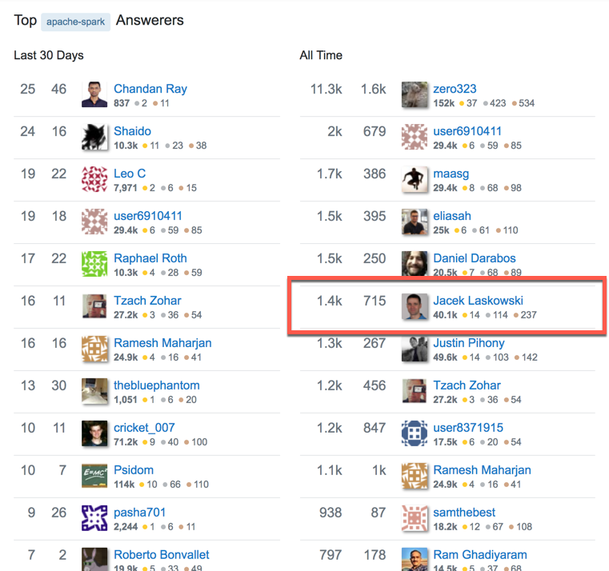

Apache Kafka™
Workshop 5 Days
@jaceklaskowski / StackOverflow / GitHub
The "Internals" Books: Apache Kafka / Kafka Streams
Jacek is best known by the online "Internals" books:
Jacek is active on StackOverflow (Apache Spark)

Prerequisities
Be prepared to get the most out of the workshop
Prerequisities / Experience
- Some programming experience using a modern programming language (Scala, Java, Python)
- Experience with shell / command line
Prerequisities / To Be Installed
- Java Platform, Standard Edition (Java SE) 11
- IntelliJ IDEA Community Edition with Scala plugin
- Linux or macOS preferred
- Consult Running Spark Applications on Windows when on MS Windows
In-Class Preparations
Make Instructor's Life Slightly Easier. Thanks!
Introduce Yourself
- First name
- What's your experience with Kafka?
- Any production experience with Kafka?
- What's your experience with Spark?
- What do you expect from the workshop?
- Where do you want to be with Kafka (and Spark) after 5 days?
Addendum
- Put your name on paper in front of you
- Stick to your laptop if possible
- Lunch at 12:45pm